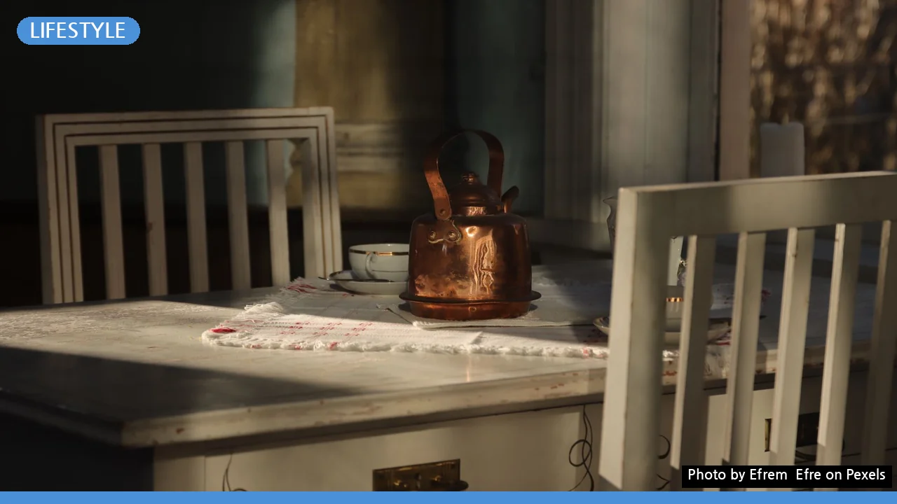
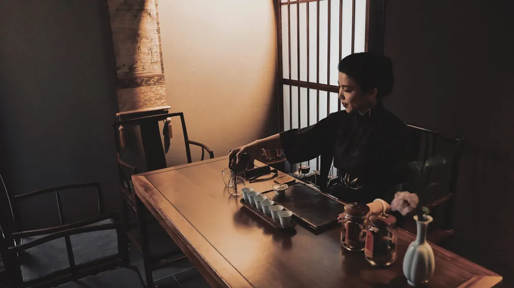

소반 활용, 이것만 알면 고민 끝! 초보자를 위한 실용 체크리스트
사진: Efrem Efre / Pexels (무료 이미지, 출처 표기)
소반, 그저 장식용이라고 생각하시나요?

소반은 우리 전통 가구 중 하나로, 과거에는 밥상으로, 때로는 귀한 손님을 위한 다과상으로 활용되었습니다. 현대에 와서는 단순히 식사 도구를 넘어 인테리어 소품, 사이드 테이블 등 다양한 용도로 재발견되고 있습니다. 하지만 막상 소반을 구매하거나 활용하려 해도 어떤 것을 골라야 할지, 어떻게 배치해야 할지 막막한 경우가 많습니다. 이 글에서는 소반을 200% 활용할 수 있는 실질적인 정보와 체크리스트를 제공합니다.
소반, 이것부터 확인하세요: 크기와 형태별 용도
소반은 크기와 형태에 따라 용도가 달라집니다. 사용 목적과 공간에 맞는 소반을 선택하는 것이 중요합니다. 주로 상판의 형태와 다리 디자인으로 나눌 수 있습니다.
주요 소반 형태별 특징
- 원형 소반 (원반): 부드러운 느낌을 주며, 여러 사람이 둘러앉기 좋고 공간 활용도가 높습니다. 다과상이나 작은 상차림에 적합합니다.
- 사각 소반 (방반): 안정적이고 단정한 인상을 줍니다. 벽이나 가구에 붙여 배치하기 좋고, 1인 식사나 노트북 작업용으로도 편리합니다.
- 팔각/십이각 소반: 전통적인 아름다움이 강조되며, 장식적인 요소가 강합니다. 특별한 공간에 포인트 가구로 활용하기 좋습니다.
소반 사이즈별 추천 용도
소반의 지름이나 한 변의 길이에 따라 활용도가 달라집니다. 대략적인 기준은 다음과 같습니다.
소반 배치, 공간별 최적 활용법
소반은 어떤 공간에 두느냐에 따라 전혀 다른 매력을 발산합니다. 거실, 침실, 서재 등 각 공간의 특성을 고려하여 소반을 배치하고 활용하는 방법을 알아보세요.
- 거실: 소파 앞 티 테이블 대신 소반을 두면 동양적인 분위기를 연출할 수 있습니다. 메인 테이블이 부담스럽다면 작은 소반을 사이드 테이블로 활용해 찻잔이나 독서용품을 올려두는 것도 좋습니다.
- 침실: 침대 옆 협탁으로 사용하면 독특한 침실 인테리어를 완성할 수 있습니다. 조명 스탠드나 알람 시계를 올려두거나, 잠시 읽던 책을 놓아두는 용도로 유용합니다.
- 서재/작업실: 노트북 받침대나 필기도구를 놓아두는 보조 테이블로 활용할 수 있습니다. 집중력을 높이는 차분한 분위기를 조성하는 데 도움이 됩니다.
- 현관/복도: 귀가 후 가방이나 열쇠를 잠시 올려두는 용도로 사용하거나, 작은 화병이나 예술 작품을 전시하는 진열대로 활용해 공간에 포인트를 줄 수 있습니다.
소반 관리법: 소재별 올바른 보관 및 청소
소반은 주로 나무로 만들어지며, 옻칠 등으로 마감되는 경우가 많습니다. 올바른 관리법을 알아두면 소반을 오랫동안 아름답게 사용할 수 있습니다.
나무 소반: 직사광선이나 습기, 건조한 곳을 피하는 것이 중요합니다. 나무는 온도와 습도 변화에 민감하여 뒤틀리거나 갈라질 수 있습니다. 오염 시에는 부드러운 천에 물을 살짝 묻혀 닦아주고, 즉시 마른 천으로 물기를 제거해야 합니다. 광택을 잃었을 때는 천연 오일(호두유, 동백유 등)을 얇게 발라주면 좋습니다.
옻칠 소반: 옻칠은 내구성이 뛰어나지만, 급격한 온도 변화나 강한 충격에 약합니다. 사용 후에는 부드러운 천으로 닦아주며, 오염이 심할 경우 미지근한 물로 가볍게 닦고 바로 건조해야 합니다. 옻칠 표면에 상처가 나지 않도록 날카로운 물건과의 접촉을 피하는 것이 중요합니다.
공통 관리 팁: 소반 위에 뜨거운 물건을 직접 올릴 때는 받침을 사용하고, 물이나 음료를 쏟았을 경우 즉시 닦아내세요. 정기적으로 마른 천으로 먼지를 닦아주는 것만으로도 소반의 수명을 연장할 수 있습니다.
소반 인테리어, 센스 더하는 스타일링 팁
소반은 그 자체로도 훌륭한 인테리어 소품이지만, 다른 아이템들과 조화롭게 배치하면 더욱 풍성한 공간을 연출할 수 있습니다. 2026년 11월 기준으로 다음과 같은 스타일링 팁을 참고할 수 있습니다.
- 자연 소재와의 조화: 소반 주변에 도자기 화병, 돌 오브제, 마른 풀 등을 배치하여 자연 친화적인 분위기를 강조할 수 있습니다. 작은 수반에 꽃잎을 띄우는 것도 좋은 방법입니다.
- 조명 활용: 소반 위에 작은 스탠드 조명이나 간접 조명을 두면 은은하고 아늑한 분위기를 연출할 수 있습니다. 특히 어두운 밤에는 소반의 아름다운 나뭇결이 더욱 돋보입니다.
- 전통 소품 믹스매치: 한지 공예품, 붓글씨, 전통 문양의 패브릭 등을 함께 배치하여 한국적인 미를 극대화할 수 있습니다. 모던한 공간에 전통 소품 하나를 두어 의외의 반전을 주는 것도 좋습니다.
- 미니멀리즘: 소반 자체의 아름다움을 살리기 위해 주변에 너무 많은 소품을 두지 않고, 최소한의 아이템만 배치하는 미니멀리즘 스타일링도 인기가 많습니다.
소반 구매 시 체크리스트 및 주의사항
새로운 소반을 구매하거나 중고 소반을 들일 때 고려해야 할 몇 가지 사항입니다.
- 용도와 공간 확인: 어떤 용도로 사용할지, 어떤 공간에 둘 것인지 명확히 정해야 합니다. 이에 따라 적절한 크기와 형태를 선택할 수 있습니다.
- 소재 및 마감: 원목의 종류(느티나무, 소나무 등), 옻칠 여부 등을 확인하세요. 소재에 따라 가격과 관리법이 달라집니다.
- 다리 구조의 안정성: 소반 다리가 흔들림 없이 견고하게 지탱하는지 확인합니다. 특히 다과나 식사용으로 사용할 경우 안정성이 중요합니다.
- 전통성 여부: 전통 공예품으로서의 가치를 중요하게 생각한다면 장인의 제작 여부, 전통 기법 사용 여부 등을 확인하는 것도 좋습니다.
- 가격 비교: 같은 디자인이라도 목재의 질, 장인의 이름값 등에 따라 가격이 천차만별입니다. 여러 판매처를 비교하고 예산에 맞는 제품을 선택하세요.
- 변색 및 긁힘 확인 (중고 구매 시): 중고 소반을 구매할 경우, 상판의 변색이나 긁힘, 다리 부분의 손상 여부 등을 꼼꼼히 확인해야 합니다.
소반은 단순한 가구가 아닌, 우리 생활에 멋과 실용성을 더하는 매력적인 아이템입니다. 이 가이드를 통해 나에게 맞는 소반을 찾고, 삶의 공간을 더욱 풍요롭게 만들어 보시길 바랍니다.
🔗 이 글도 함께 보면 좋아요: 육아휴직급여, 이것만 알면 끝! 초보 엄마아빠를 위한 핵심 가이드
관련 추천 상품
이 포스팅은 쿠팡 파트너스 활동의 일환으로, 이에 따른 일정액의 수수료를 제공받습니다.
한눈에 보는 상품 목록
원형 소반 (원반)
부드러운 디자인으로 다과상, 침대 협탁 등으로 활용하기 좋은 소반입니다.
사각 소반 (방반)
안정적인 형태로 1인 식사상, 노트북 테이블, 벽에 붙이는 보조 테이블로 적합합니다.
팔각 소반
전통적인 미감이 돋보이며, 장식용 또는 특별한 자리의 다과상으로 활용하기 좋은 소반입니다.
느티나무 소반
단단하고 아름다운 나뭇결을 가진 느티나무로 제작되어 고급스러운 분위기를 연출하는 소반입니다.
옻칠 소반
옻칠 마감으로 내구성과 방수성이 뛰어나며, 깊이 있는 색감과 광택이 특징인 소반입니다.